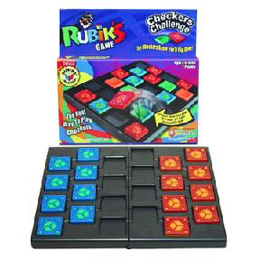

History
Rubik's Checkers is a game that is similar to checkers. The popular Rubik's games were originally invented by Ernö Rubik.
Game Play
The Pieces:
There are two pieces - kings and men. Kings become men when jumped over by a king.
Rules:
To move: Each player takes turns making one valid move.
Valid Moves:
Kings may move diagonally, forward, or backward. A king may jump over an opponent's piece if the space it jumps to is empty. Multiple jumps are possible (like in regular checkers). When a king jumps over an opponent's king, that king is demoted to a man. If the king jumps over an opponent's man, then that man is removed from the board. When a player's king jumps over the same player's man, that man is promoted back to a king.
A man may only move backwards, not forward. A man cannot jump or capture any piece.
On your turn, a piece in your home row may be promoted to a King.
To win: Eliminate all of the opponents pieces or prevent them from moving.
Players alternate making legal moves.
Variants:
Misere: Eliminate all of your own pieces or prevent all of your pieces from moving.
Pictures:
|  |
References:
Toys in the Attic. Rubik's Checkers Challenge. 18 Feb 2007. <http://www.toysintheattic.biz/products/winningmoves/rubiks.htm>.
ESP Plus. Rubik's Checkers Challenge. 18 Feb 2007. <http://www.espplusnc.com/store/merchant.mv?Screen=PROD&Store_Code=ESP&Product_Code=WM5012>.